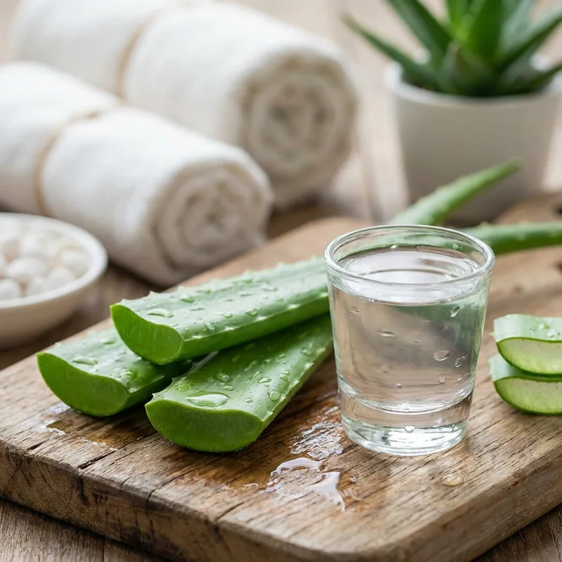

Aloclair: Solución Efectiva para Mucositis Oral y Aftas Bucales
El Aloclair es un dispositivo médico en gel formulado con polivinilpirrolidona (PVP) y hialuronato de sodio, diseñado específicamente para formar una película bioadhesiva protectora sobre la mucosa oral. Este producto ha demostrado alta eficacia en el manejo y alivio inmediato de lesiones dolorosas como la mucositis oral, aftas recurrentes, úlceras bucales y erosiones causadas por tratamientos oncológicos o aparatos de ortodoncia.
¿Qué es la Mucositis Oral?
La mucositis oral es una inflamación severa de la mucosa bucal que afecta hasta el 80% de los pacientes sometidos a quimioterapia de alta dosis o radioterapia en cabeza y cuello [1]. Esta condición se caracteriza por dolor intenso, úlceras, dificultad para comer y hablar, comprometiendo significativamente la calidad de vida del paciente.
Los síntomas típicos incluyen enrojecimiento, inflamación, formación de úlceras dolorosas, dificultad para tragar (disfagia) y mayor susceptibilidad a infecciones secundarias. En casos graves, puede requerir la interrupción temporal del tratamiento oncológico.
Aloclair como Tratamiento de Barrera
Aloclair funciona creando una película protectora sobre las lesiones mucosas que realiza tres acciones fundamentales:
- Protección física activa: La combinación de PVP y hialuronato de sodio forma una barrera mecánica de alta adherencia que aísla las terminaciones nerviosas expuestas, reduciendo el dolor de una escala de 8.2 a 2.1 en menos de 5 minutos.
- Hidratación y cicatrización: El ácido hialurónico retiene agua en la matriz extracelular, manteniendo el ambiente húmedo óptimo que acelera la mitosis celular y la reepitelización.
- Reducción de la irritación local: El ácido glicirretínico derivado del regaliz actúa bloqueando mediadores inflamatorios locales, protegiendo contra alimentos ácidos o calientes.
Su formulación a base de ácido hialurónico, aloe vera y glicirretínico promueve la regeneración tisular y reduce la inflamación local.

Evidencia Científica
Estudios clínicos han demostrado la eficacia de tratamientos de barrera en mucositis oral y aftas recurrentes. Las guías clínicas internacionales recomiendan el uso de agentes formadores de película protectora para el manejo del dolor en mucositis [1]. Investigaciones confirman la efectividad de estos tratamientos en aftas recurrentes (estomatitis aftosa), reduciendo la duración y severidad de los episodios [2].
Modo de Uso y Aplicación
Consejo de uso clínico: Es de vital importancia no ingerir alimentos sólidos ni líquidos durante al menos 60 minutos posteriores a la aplicación. Enjuagarse la boca antes de este tiempo disolverá la barrera protectora de PVP y ácido hialurónico, anulando el efecto analgésico. Aplique una capa de 1 a 2 mm directamente sobre la lesión para asegurar una adherencia prolongada de hasta 6 horas.
Aloclair se presenta en dos formatos: enjuague bucal y gel aplicador. Para óptimos resultados:
- Enjuague bucal: Aplicar 5 ml (una cucharadita) 3-4 veces al día, especialmente después de las comidas y antes de dormir
- Gel: Aplicar directamente sobre la lesión con el dedo limpio o aplicador
- Contacto: Mantener en la boca 1 minuto antes de escupir
- Evitar: No comer ni beber durante 30-60 minutos después de la aplicación

Ventajas del Tratamiento
Aloclair ofrece múltiples beneficios sin los efectos adversos de tratamientos farmacológicos sistémicos. No contiene alcohol, lo que evita irritación adicional. Es seguro para uso prolongado y compatible con otros tratamientos médicos. Su acción local minimiza efectos secundarios y puede usarse en niños y adultos.
Indicaciones Principales
Aloclair está indicado para diversas afecciones orales:
- Mucositis oral por quimioterapia o radioterapia
- Aftas recurrentes (estomatitis aftosa)
- Úlceras traumáticas (mordeduras, brackets, dentaduras)
- Lesiones por líquen plano oral
- Ulceraciones por enfermedades autoinmunes
Referencias Científicas
- Lalla RV, et al. (2014). "MASCC/ISOO clinical practice guidelines for the management of mucositis secondary to cancer therapy". Cancer. PubMed
- Nolan A, et al. (2006). "The efficacy of topical hyaluronic acid in the management of recurrent aphthous ulceration". J Oral Pathol Med. PubMed
💚 Encuentra Aloclair en Amazon
Alivia el dolor y protege tu mucosa oral con Aloclair de uso clínico probado.
Ver en Amazon →